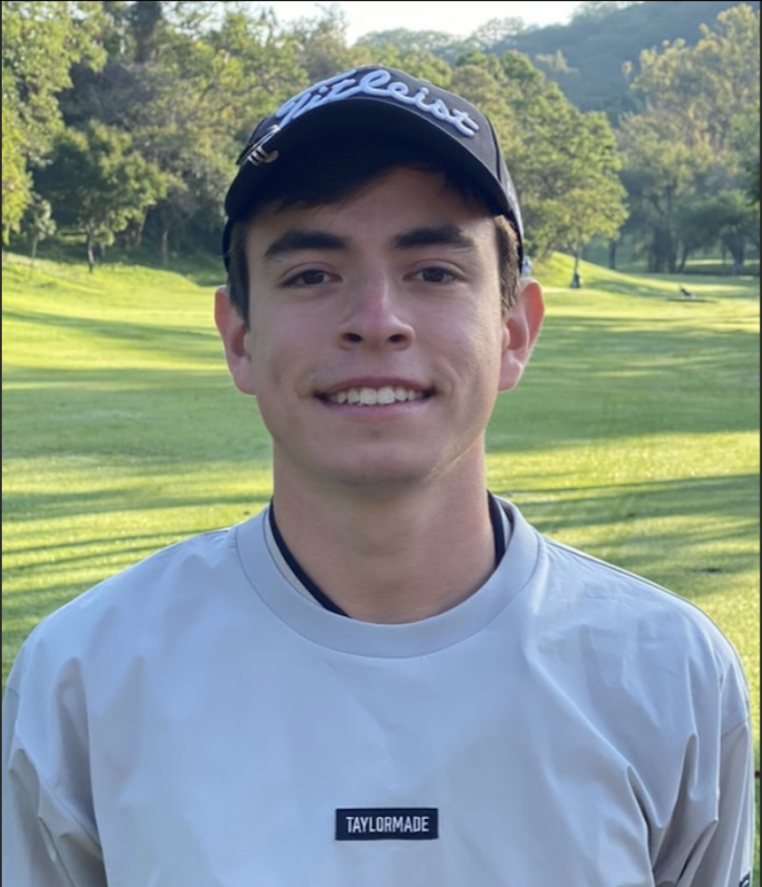

My Curriculum
Carlos Emilio Romero Polanco

Contact Info
Project Portafolio
Summary
Recently graduated college student with a bachelor in Mechatronic Engineering from the university of
ITESM (Instituto Tecnologico de Estudios Superiores de Monterrey) campus Guadalajara, Mexico.
Currently focusing con web development, and have 3 years working experience in industrial automation.
Education
Highschool
- Prepa Tec
- German Language Summer Program 2017
- AUG 2016 - JUN 2019
- Guadalajara, Jalisco Mex.
University
- ITESM - Mechatronic Engineering
- AUG 2019 - JUN 2023
- Guadalajara, Jalisco Mex.
Extracurricular Courses
- UDEMY, The Complete 2023 Web Development Bootcamp
- Add future Courses
Work Experience
Circuit Boards Coordinator
- Automatyco, S.A. de C.V.
- Responisble for circuit board and plate mechanical set-up
and assembly for customized automation equipment
- FEB 2020 - AUG 2021
Electrical Assembly Supervisor
- Automatyco, S.A. de C.V.
- In charge of training new members and coordinating the
electrical assembly of machines and robots
- AUG 2021 - JAN 2023
Skills
Hard Skills
- Microsoft Office
- Matlab
- PLC Programming
- Solidworks
- Fusion 360
- Python (Beginner)
- HTML (Intermediate)
- Spanish (Fluent)
- English (Fluent)
- German (Beginner B1)
Soft Skills
- Problem Solving
- Team Work
- Adaptability
- Innovation